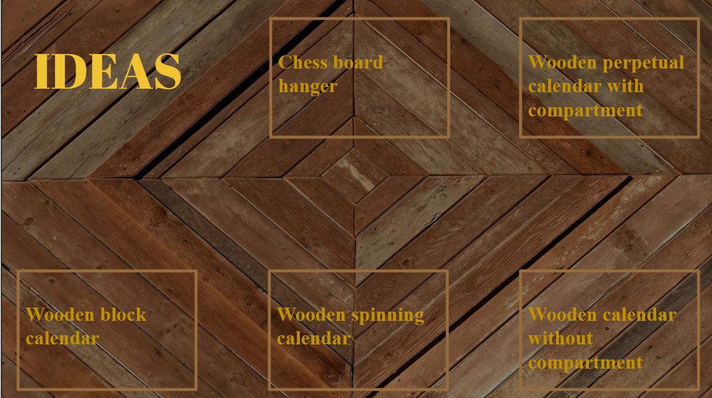
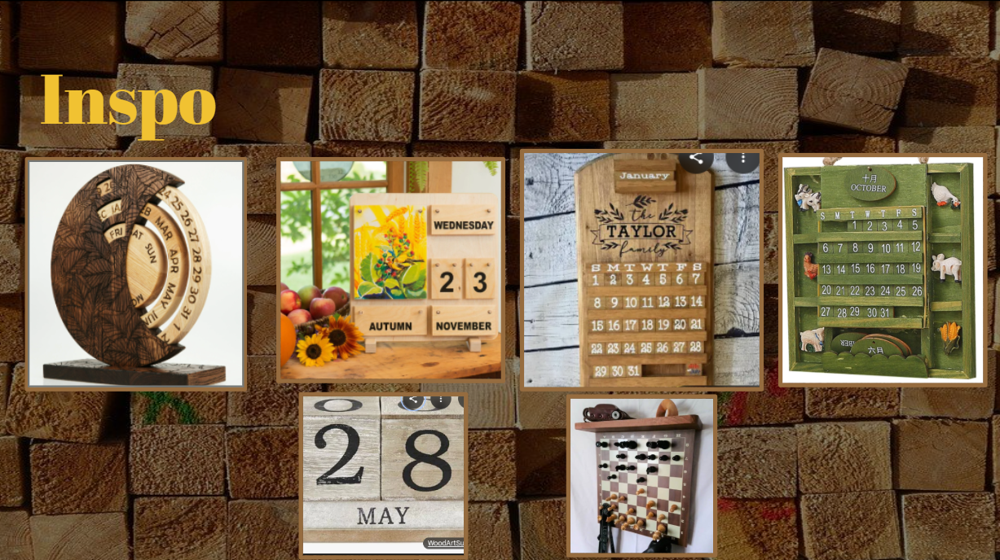

3D Calendar Makerspace Project
Gantt Chart

For this project I decided to make a calendar. I brainstormed a few ideas but I landed upon this one because it interested me most.


Software
Onshape

I used Onshape to make a to scale mock up of my project so that when I went to make it I could use it as a reference and use the measurements directly
Lightburn

Instead of cutting out every single piece I used to laser to cut everything for me. This made my project more presice and easy to put together
Results and Reflections


Back to 10th grade projects